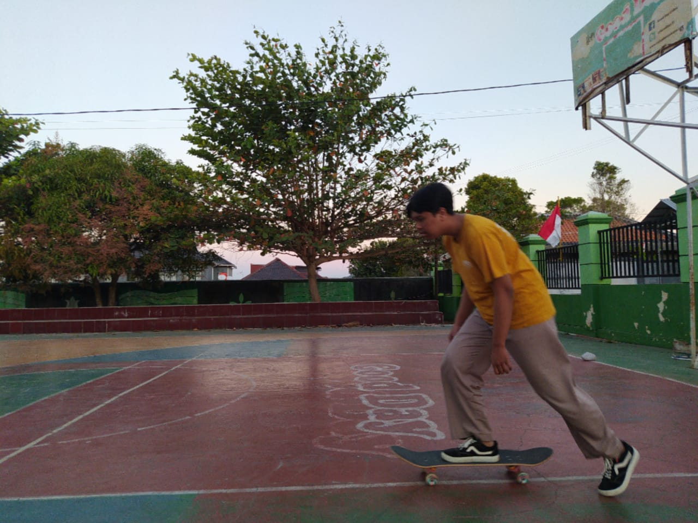

Selamat Datang di Portfolio Saya
Saya adalah mahasiswa Sistem Informasi yang bersemangat untuk mengeksplorasi dan menerapkan pengetahuan saya dalam proyek-proyek kreatif.
Saya adalah mahasiswa Sistem Informasi yang bersemangat untuk mengeksplorasi dan menerapkan pengetahuan saya dalam proyek-proyek kreatif.